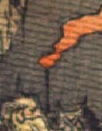

鬼。頭に角が1本生えている。頭部の上半分しか見えないが、松明を持っているようである。
著作者：J.Dautremer／出典：親書誌：U426_nichibunken_0123：Le vieillard et les démons／日付：2006／資源識別子：U426_nichibunken_0123_0002_0020
Copyright (c)2010- International Research Center for Japanese Studies, Kyoto, Japan. All rights reserved.